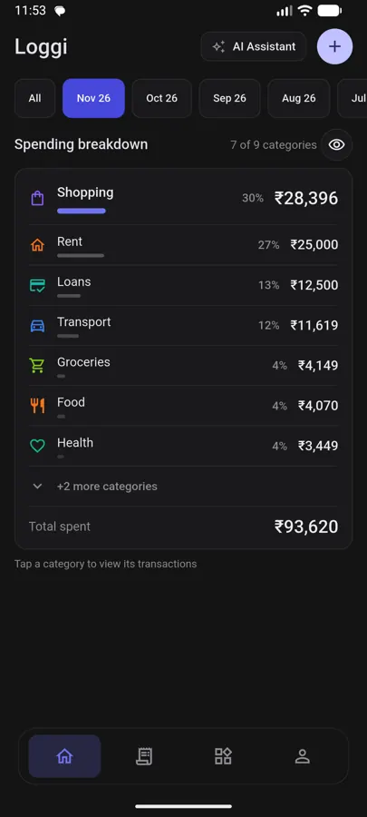
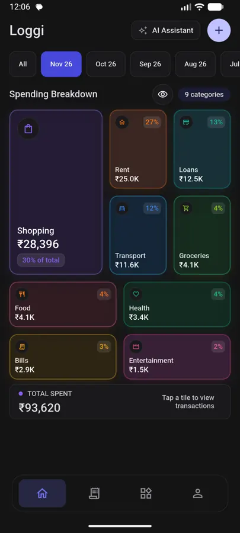
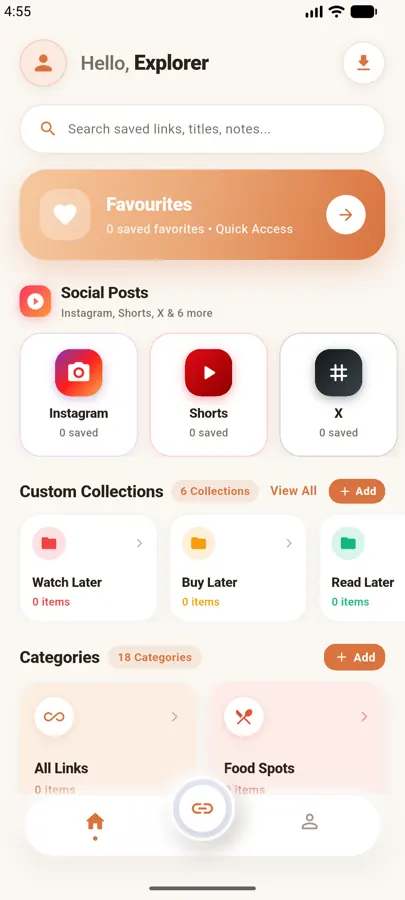
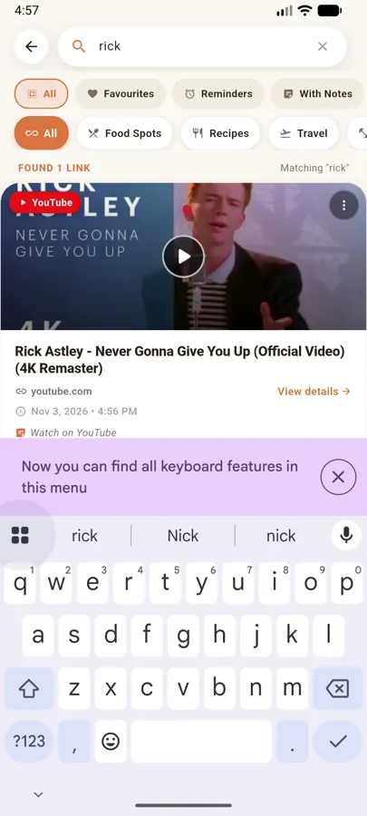

Hello, I'm
Krishna Pranav
Akshintala.
Data Engineer · App builder
I turn messy, scattered data into clean, trustworthy pipelines — and on weekends I build privacy-first apps that keep your data on your phone.
Hello, I'm
Data Engineer · App builder
I turn messy, scattered data into clean, trustworthy pipelines — and on weekends I build privacy-first apps that keep your data on your phone.
01 — The day job
I design and run the plumbing that gets data from where it's born to where decisions are made.
02 — How data flows
Every stage is observable, re-runnable and tested — so a bad upstream file becomes an alert, not a wrong number in a meeting.
03 — Beyond the day job
A privacy-first, offline expense tracker. It reads bank and UPI SMS on the device and turns them into categorised spending insights — no account, no cloud.
Android app · actively developed
04 — Beyond the day job
Save it. Find it. Share any link or video into Findy and it's organised into categories, searchable offline, and backed up with encryption.
Android app · actively developed
05 — Beyond the day job
A fitness and habit companion for Android with a Wear OS app on the wrist — small nudges that make showing up a little easier.
In progress
06 — Beyond the day job
Vegetarian nutrition and meal planning — balanced plans and a clear picture of what's on your plate.
In progress
07 — Beyond the day job
A shared Google Sheets planner for groceries, meals and plans — proof that the right spreadsheet beats a new app.
Selected work


Offline expense tracking from bank and UPI SMS. Parsing, categorising and insights all happen on the phone.
Privacy policy ↗

Save links and media, find them instantly with offline full-text search, lock with a fingerprint and back up with encryption.
Privacy policy ↗Fitness and habit tracking on your phone and your wrist.
In progress
Vegetarian nutrition and meal planning made simple.
In progress
A shared planner for groceries, meals and household plans.
In daily use
How I work
Idempotent jobs, clear retries and tests at every hop. If it breaks at 3 a.m., it should say why.
Collect only what's needed. My apps keep personal data on the device and encrypt what leaves it.
Apps should work on a plane or a patchy network. The network is a bonus, not a requirement.
Readable SQL, small modules and documentation people actually read.
Journey
Building and maintaining data pipelines, models and quality checks that teams rely on.
Two offline-first Flutter apps for Android: SMS expense tracking and a private link library.
A Wear OS habit companion and a vegetarian meal planner.
Always happy to talk data, apps, or both.
Got a data problem or an app idea? Say hi on GitHub.
Say hi on GitHub @apranav ↗